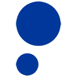

BotpressAI-персонажи
Botpress помогает настроить разговорного агента для поддержки. Ответы зависят от базы знаний, а сценарий действий определяет, что бот делает помимо сообщения в чате.
AI-персонажи: Задайте характер и границы общения. Сравните сохранение контекста, возможность редактировать описание и правила работы с личными данными.
Задайте персонажу привычки речи, знания и границы поведения. Текстовый паспорт помогает выдержать роль в нескольких сценах и заметить реплики, которые выбиваются из образа.
Составь паспорт вымышленной библиотекарши для интерактивной истории. Она любит точные вопросы, знает городские легенды и не раскрывает развязку. Добавь пять характерных реплик.

Botpress помогает настроить разговорного агента для поддержки. Ответы зависят от базы знаний, а сценарий действий определяет, что бот делает помимо сообщения в чате.

Leonardo.Ai помогает создавать, редактировать и анимировать изображения. Полезен для визуальных концепций, персонажей и материалов, которые затем доводят до рабочего макета.
Lessie AI используют, чтобы исследовать тему и разбирать найденную информацию. Ещё одно направление работы: собирать видео с цифровым ведущим.

Runway объединяет генерацию видео, преобразование кадров и творческие рабочие процессы. Начинать удобнее с конкретного плана сцены и требований к сохранению объектов.

В инструменте «Taskade» можно писать и изменять программный код. Ещё одно направление работы: собирать рабочие инструменты и операции с данными.

Zeni используют для задачи: обрабатывать финансовые документы и записи. Ещё одно направление работы: собирать видео с цифровым ведущим.

DeepFiction используют для задачи: собирать видеосцену по описанию или визуальному исходнику. Ещё одно направление работы: получать изображения из словесного задания.

HeyGen создаёт видео с говорящими аватарами и помогает переводить ролики. Качество рабочего материала зависит от сценария, произношения и согласованного использования лица и голоса.
Huru.ai относится к инструментам, которые помогают собирать видеосцену по описанию или визуальному исходнику. Ещё одно направление работы: собирать видео с цифровым ведущим.

Moodbox используют, чтобы собирать видео с цифровым ведущим. Ещё одно направление работы: работать с заданным образом ИИ-персонажа.

Mujo AI используют, чтобы собирать видео с цифровым ведущим. Ещё одно направление работы: работать с заданным образом ИИ-персонажа.

Workday используют для задачи: разбирать финансовые показатели и рыночные данные. Ещё одно направление работы: готовить ответы на обращения клиентов.

Agent Zero позволяет запускать агента в собственном рабочем окружении. До выполнения задачи нужно определить доступные инструменты и ограничить область его действий.

DumplingAI используют, чтобы исследовать тему и разбирать найденную информацию. Ещё одно направление работы: разбирать содержимое документов.
В инструменте «Flirtist» можно собирать видео с цифровым ведущим. Ещё одно направление работы: настраивать разговор с заданным персонажем.

Midjourney создаёт изображения по описанию и референсам. Подходит для поиска художественного направления, иллюстраций и визуальных концепций перед детальной доработкой.

Public.com используют для задачи: связывать действия в автоматизированный процесс. Ещё одно направление работы: собирать видео с цифровым ведущим.

AIVideo относится к инструментам, которые помогают собирать видеосцену по описанию или визуальному исходнику. Ещё одно направление работы: собирать видео с цифровым ведущим.

Chatbase помогает создать агента, который отвечает по материалам организации. Помимо текстов базы знаний важно определить границы допустимых ответов и действий.

В инструменте «EchoWin» можно связывать действия в автоматизированный процесс. Ещё одно направление работы: готовить ответы на обращения клиентов.

Fabric относится к инструментам, которые помогают собирать видео с цифровым ведущим. Ещё одно направление работы: организовывать материалы и поиск по ним.

ForgeFluencer рассчитан на задачи, где нужно собирать видеосцену по описанию или визуальному исходнику. Ещё одно направление работы: получать изображения из словесного задания.

MiroFish используют для задачи: исследовать тему и разбирать найденную информацию. Ещё одно направление работы: собирать видео с цифровым ведущим.

SiteGPT используют для задачи: готовить ответы на обращения клиентов. Ещё одно направление работы: собирать видео с цифровым ведущим.
LangSmith помогает наблюдать и оценивать работу приложений с языковыми моделями. Для анализа полезно сохранять запрос, промежуточные действия и итоговый ответ вместе.

Questie AI рассчитан на задачи, где нужно собирать видео с цифровым ведущим. Ещё одно направление работы: создавать интерактивный сценарий.

Tensor.art рассчитан на задачи, где нужно получать изображения из словесного задания. Ещё одно направление работы: собирать видео с цифровым ведущим.
Wren AI используют, чтобы подготавливать запросы к базе по формулировке задачи. Ещё одно направление работы: исследовать тему и разбирать найденную информацию.

В инструменте «Magica» можно связывать действия в автоматизированный процесс. Ещё одно направление работы: собирать видео с цифровым ведущим.

RentAHuman.ai относится к инструментам, которые помогают связывать действия в автоматизированный процесс. Ещё одно направление работы: готовить ответы на обращения клиентов.

SeaArt AI помогает создавать рисунки с использованием разных ИИ-моделей. Продукт предоставляет библиотеку моделей и рекомендации, дополняющие подготовку изображения. Взаимодействие с сообществом также входит в описанные возможности, связывая визуальную работу автора с просмотром и обсуждением художественных материалов.

Yoodli рассчитан на задачи, где нужно собирать видео с цифровым ведущим. Ещё одно направление работы: обрабатывать голосовые обращения.
Страница 2 из 2